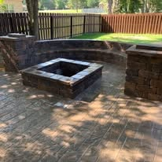
Create a Fire-Pit and Outdoor Gathering Area
A retaining-wall system can establish a level paved area for seating, a fire pit, and outdoor gatherings while coordinating the wall, walking surface, access, drainage, and landscape.
Transform steep, eroding, or difficult ground into usable outdoor space with a retaining-wall system designed around your property. Create defined areas for gardens, patios, walkways, stairs, seating, fire pits, and landscaping while helping preserve the yard, manage water, and control soil movement.
A steep, eroding, or uneven yard can limit where a property owner can walk, landscape, entertain, garden, or build an outdoor living area. A retaining-wall system can divide difficult ground into organized elevations that support the soil and create functional space.
The wall can become part of the landscape by forming garden terraces, patios, seating areas, fire-pit spaces, walkways, stairs, landings, and defined transitions between different parts of the property.
The completed system should do more than hold soil. The wall, drainage, grading, access, landscaping, and finished outdoor area should work together around how the property owner wants to use the land.
Crain Bros Inc provides retaining wall and outdoor-space construction services for property owners across Northeast Arkansas. We coordinate retaining walls with grading, drainage, erosion control, stairs, landings, walkways, patios, planting areas, and the surrounding property so the finished work supports both the site and the way the outdoor space will be used. Crain Bros Inc is family owned and operated since 1984.
Discuss Your Outdoor Space
A retaining-wall system can establish a level paved area for seating, a fire pit, and outdoor gatherings while coordinating the wall, walking surface, access, drainage, and landscape.
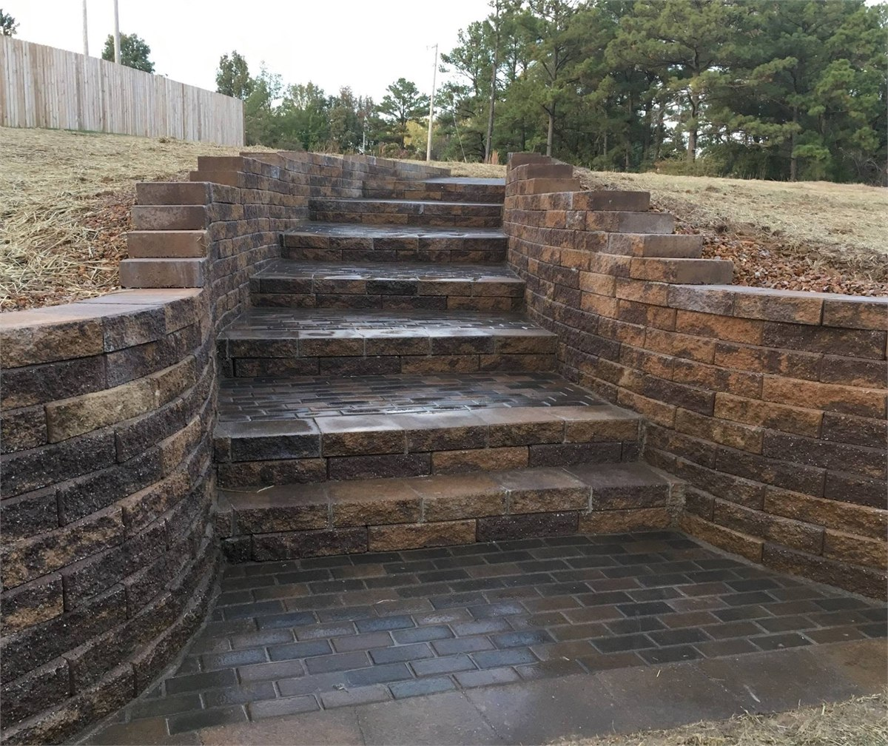
Integrated stairs and landings create a defined route through an elevation change while adjoining walls support retained ground and organize the surrounding landscape.
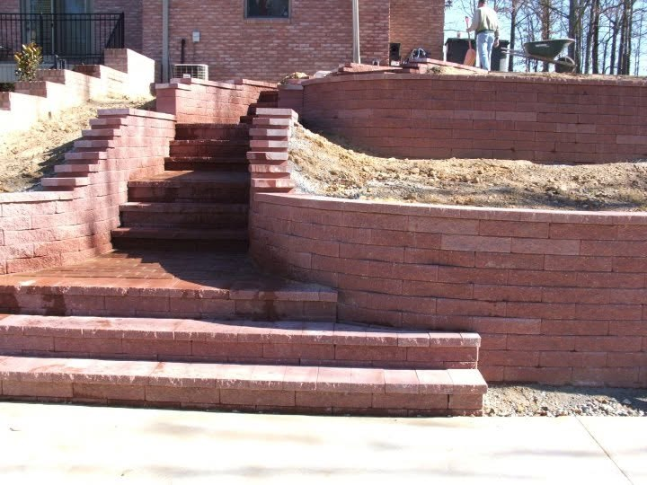
Multiple wall levels, stairs, and landings can turn a difficult slope into connected outdoor areas that are easier to reach, landscape, maintain, and use.
A new retaining-wall project begins with the property problem and the space the owner wants to create. Wall location, height changes, curves, stairs, terraces, drainage, and surrounding improvements should be planned around that purpose.
One property may need a wall that protects usable lawn. Another may use several elevations to form garden terraces, connect a patio to a lower yard, create seating around a fire pit, or establish access through a steep area.
The wall route must also account for soil, water movement, erosion, nearby foundations, utilities, property boundaries, equipment access, landscaping, and restoration of disturbed areas.
Support the edge of a grade change so more of the property can function as maintained lawn, recreation space, or accessible yard.
Divide a difficult slope into defined planting levels that are easier to reach, landscape, observe, and maintain.
Create a planned elevation for outdoor seating, dining, gathering areas, and connections to the home or another part of the property.
Coordinate walls, seating, walking surfaces, access, drainage, and surrounding grade around a functional outdoor gathering area.
Integrate stairs, landings, and walkways so upper and lower property areas can be reached without relying on a steep or eroding route.
Coordinate wall construction, surface grading, drainage, and discharge so runoff does not continue moving soil away from the yard.
The following photographs show the actual progression of a Crain Bros Inc retaining-wall project. The sequence is provided as a property-owner guide to the visible stages of the work, not as a universal construction specification.
Actual excavation depth, base preparation, drainage, wall components, reinforcement, backfill, and finished details depend on the selected wall system and the conditions at the property.
The purpose of this early work is to establish the planned wall route, manage changing elevations, create construction access, and prepare a dependable supporting path before the first wall course is installed.
Plan a Retaining Wall System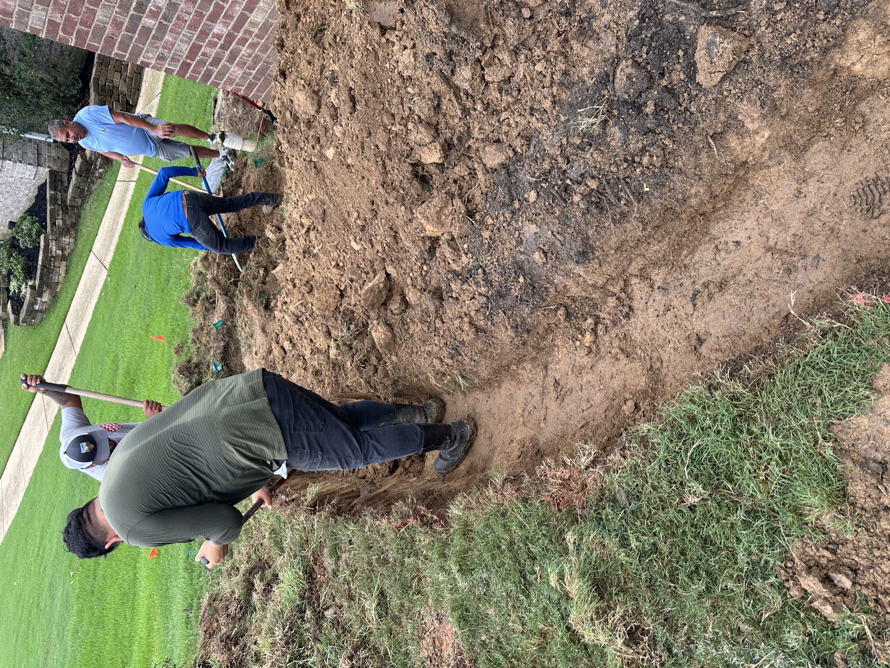
Excavation opens the route through the existing yard and creates working room for the supporting base, wall units, drainage, equipment, workers, and staged materials.
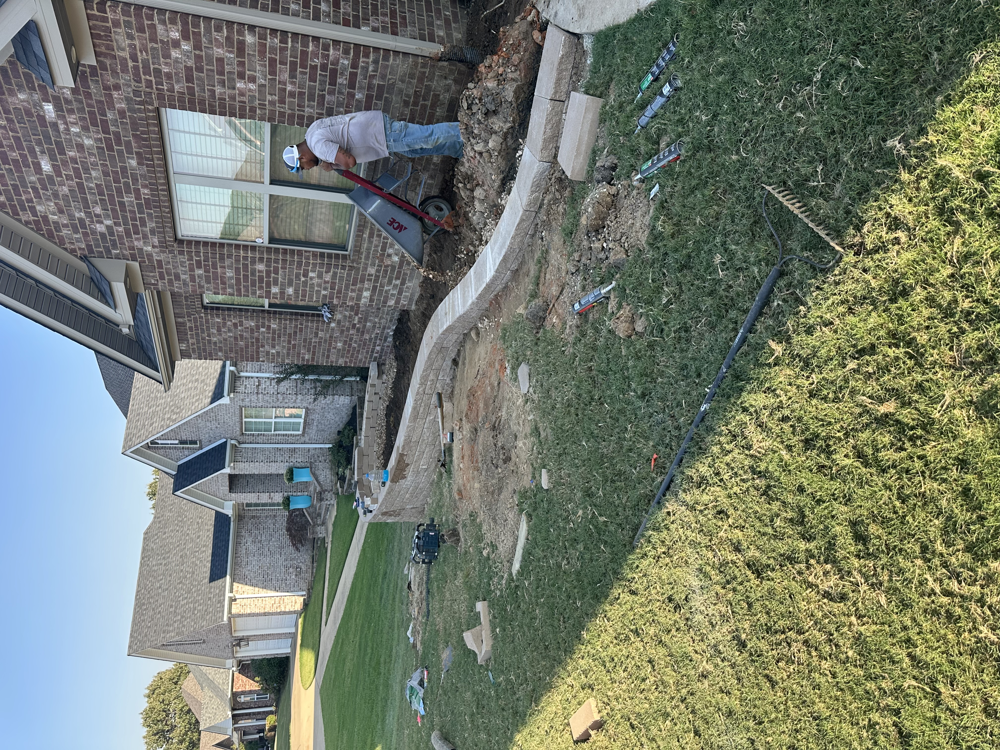
The complete curved route is opened beside the building so the wall location, grade transition, access, and relationship to the surrounding lawn can be established.
The excavated path is shaped through changing property elevations before the wall rises above the yard. This establishes the route the completed wall will follow.
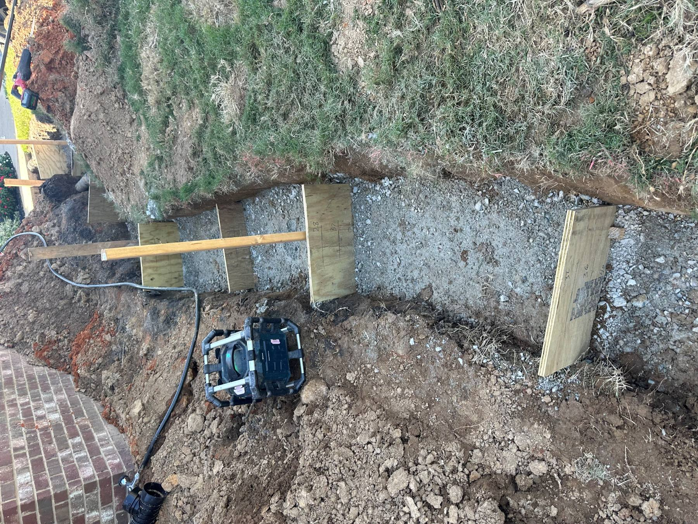
Aggregate is placed within the excavated trench and compacted to prepare the supporting path for the first wall course.
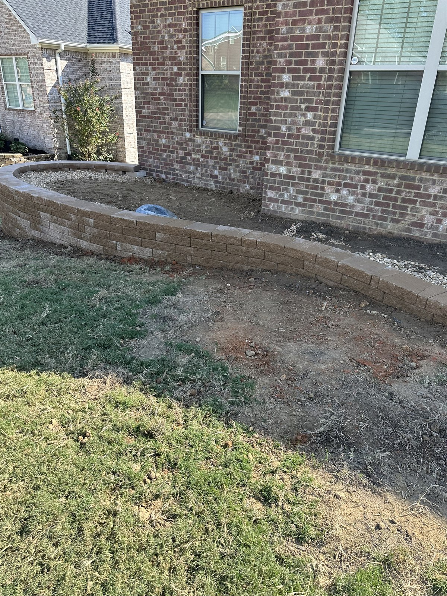
The prepared aggregate base follows the planned wall line beside the building and establishes the curved route for the first course.
The wall units form the visible face of the retaining-wall system, but the completed wall also depends on the supporting base, aggregate, drainage, retained material, controlled backfill, compaction, and reinforcement when required.
Unit style, wall height, curves, stairs, drainage, reinforcement, and work behind the wall must be coordinated with the selected wall system and actual property conditions.
The visible block is one part of a connected system that must support the retained ground while fitting the planned outdoor space and landscape.
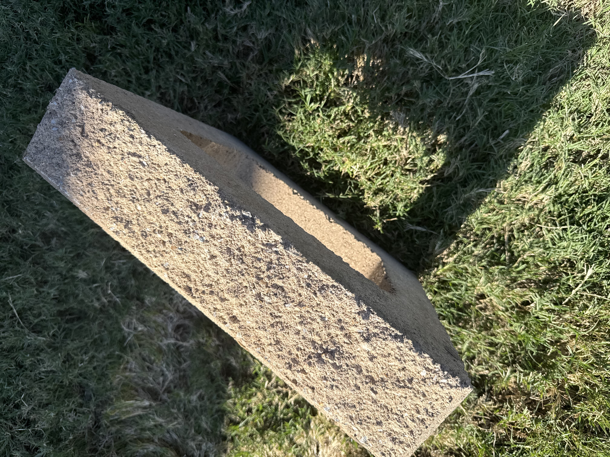
The textured exterior face becomes part of the finished landscape while the unit profile connects with adjoining wall units through the planned wall line.
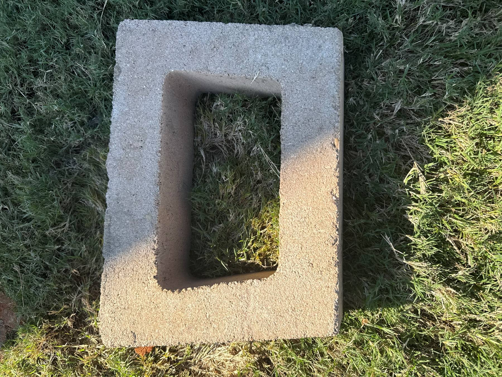
The hollow wall unit provides internal space for aggregate placement as the wall assembly develops.
The prepared base supports the first course and follows the planned wall route, curves, and elevation changes.
Water within retained soil needs a planned route through drainage materials and toward a dependable discharge point.
Some wall systems require reinforcement extending behind the wall into the retained area according to the wall design and property conditions.
Backfill and compaction are coordinated with wall construction so the retained area and visible wall develop together.
The first course establishes the wall location, starting elevations, alignment, curves, and relationship to the planned landscape. Placement and corrections occur at the base before additional courses are installed.
Curves, wall ends, stairs, nearby improvements, changing elevations, and construction access remain coordinated as the first course progresses.
Careful first-course placement gives later wall courses a consistent route to follow and helps the finished wall fit the intended outdoor area.
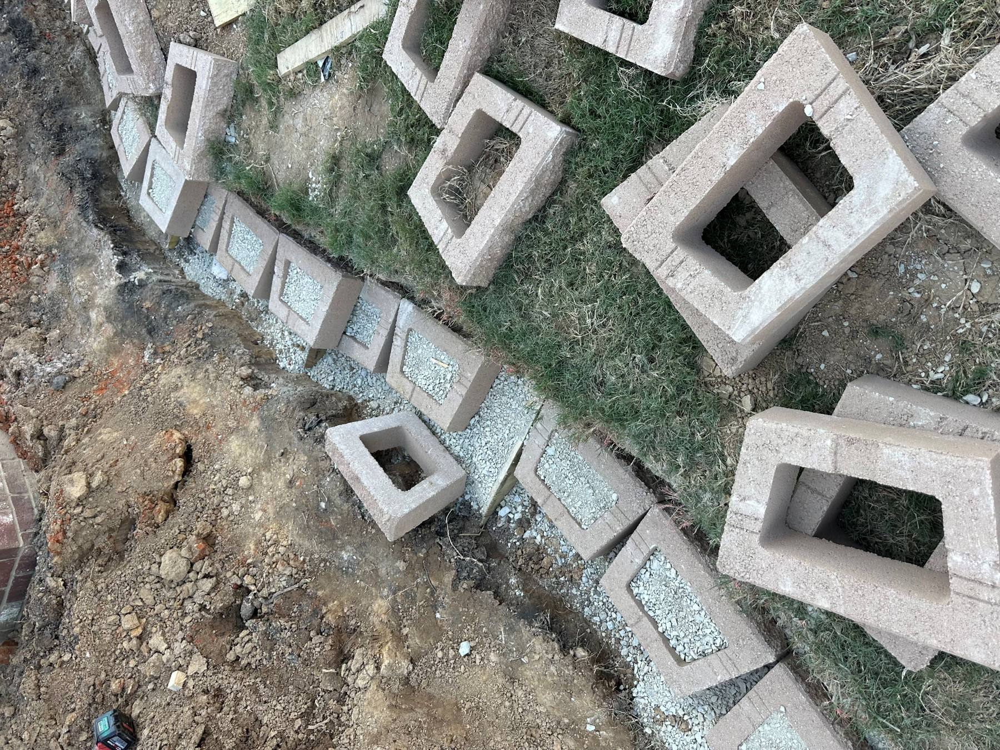
Initial wall units are positioned along the prepared curved base while additional units remain staged nearby for continued installation.
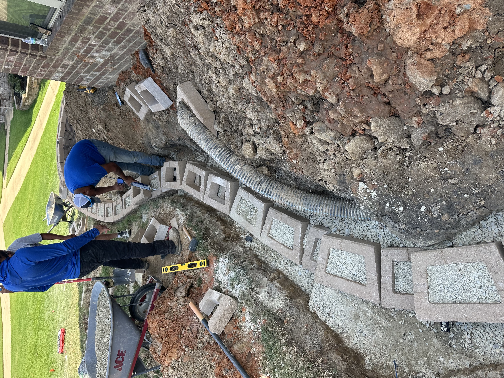
The first course is checked during installation so alignment and elevation remain consistent with the planned wall route.
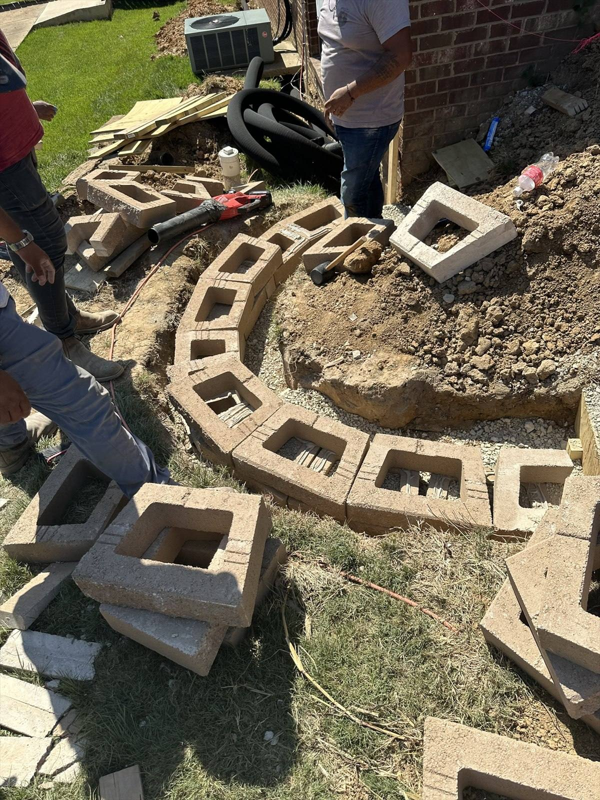
Detailed placement forms a tighter curve near the building while preserving the planned relationship between the wall, active work area, and surrounding yard.
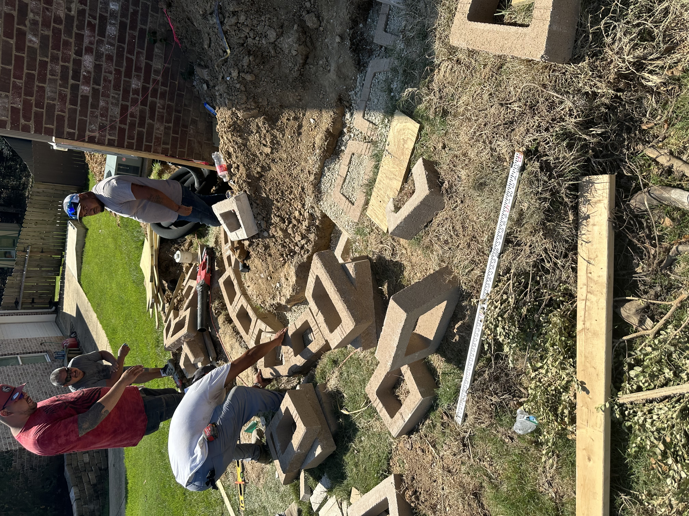
Wall-unit placement, layout tools, staged materials, and supporting-base work are coordinated within the same active construction area.
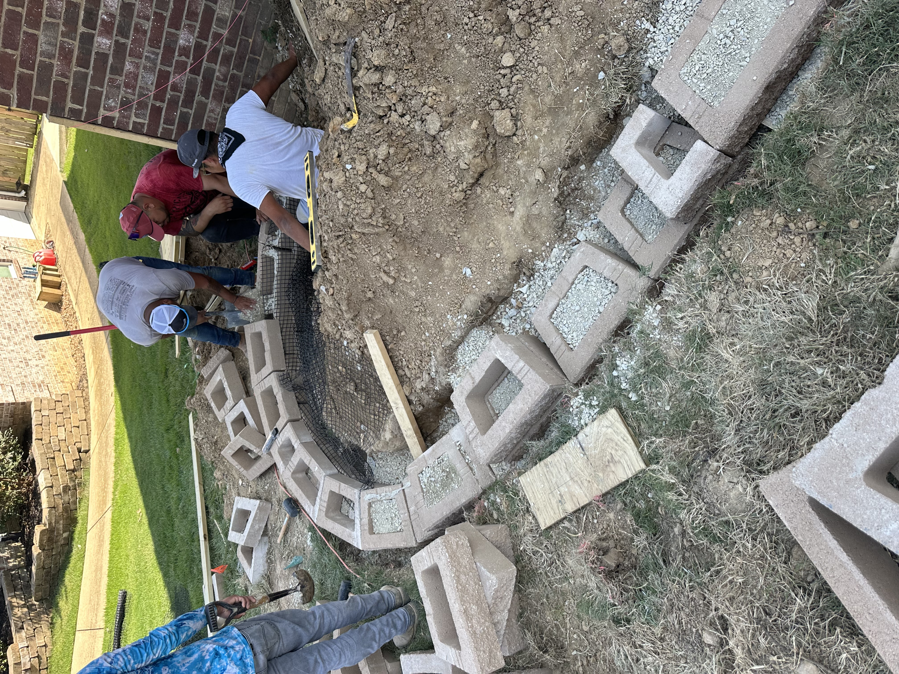
The first course continues through the planned curve and establishes the line that later wall courses will follow.
After the first course establishes the wall route, additional courses raise the wall through the planned curves and elevation changes. The visible wall and the retained area behind the wall develop together.
Aggregate, drainage materials, reinforcement when required, controlled backfill, compaction, wall alignment, and access must remain coordinated as construction advances.
The work behind the visible wall is essential to the completed system. Drainage needs a connected route, retained material must be placed in coordination with the wall, and finished grading must direct surface water away from vulnerable areas.
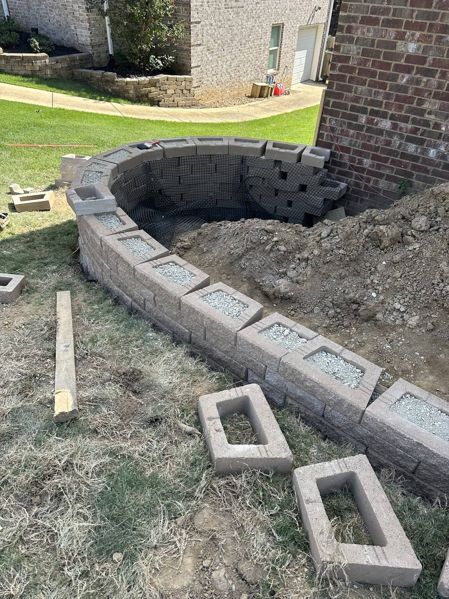
Additional courses raise the wall above the curved first course while retained material, aggregate, and the work area develop behind the visible wall face.
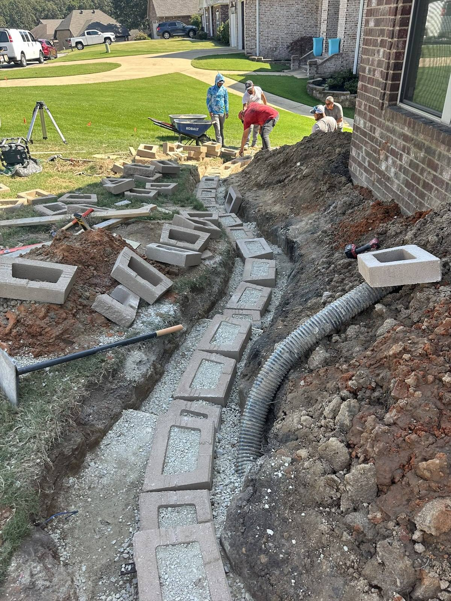
Wall construction advances along the property with workers, aggregate, staged materials, retained ground, and the active work route coordinated together.
Each additional course follows the established first-course route while preserving planned curves, wall ends, height changes, and connections to adjoining features.
Drainage materials need a connected route and dependable outlet so collected water can leave the retained area instead of remaining trapped behind the wall.
Reinforcement requirements depend on the selected wall system, wall dimensions, retained soil, nearby loads, property conditions, and project design.
Backfill and compaction progress with wall construction so the retained area, drainage path, reinforcement, and visible wall develop as one connected system.
Finished grading and drainage should keep runoff from carrying soil downhill, forming erosion channels, undermining wall ends, or reducing usable ground.
The completed retaining-wall system should support the elevated ground, preserve usable property, manage the grade transition, and become part of the finished landscape.
Caps, stairs, landings, walks, patios, lawn, planting areas, drainage, and restoration of disturbed ground can be coordinated around the outdoor space the property owner wants to use.
The finished wall should connect the structural purpose of retaining soil with the practical purpose of creating a yard, garden, gathering area, access route, or landscaped property feature.
Create a More Functional Yard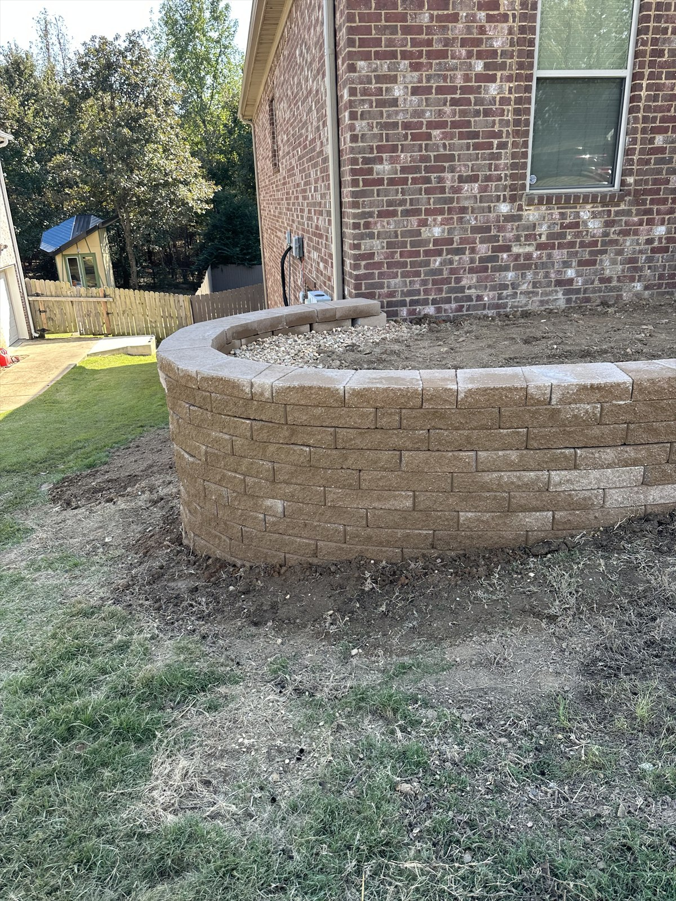
The completed curved wall supports elevated ground beside the building while fitting the wall line into the surrounding yard and preserving usable space below.
Use wall levels and curves to create defined beds, terrace gardens, and landscape areas that are easier to reach, organize, and maintain.
Coordinate walking surfaces, seating, fire-pit spaces, access, drainage, and surrounding grade with the completed wall system.
Complete the routes that connect upper and lower property elevations so the retained areas can function as usable parts of the property.
Complete lawn, landscaping, surface grading, drainage paths, walks, and other areas disturbed during excavation and construction.
Keep drainage outlets, wall ends, surface grades, planting areas, and runoff paths visible and maintained after the project is complete.
New retaining-wall systems and functional outdoor spaces are the primary focus of this service. Crain Bros Inc also evaluates existing walls that lean, bulge, crack, separate, erode, or no longer serve the property.
Repair may be appropriate when an existing wall can remain serviceable after contributing conditions are corrected. Reconstruction may be required when movement, deterioration, drainage, support, materials, or the required property function cannot be addressed through a limited repair.
Repairing only the visible wall without addressing trapped water, soil movement, erosion, failed drainage, inadequate support, or changes in the retained area can leave the underlying property problem in place.
A reconstruction project can reconsider wall location, stairs, terraces, drainage, access, outdoor use, and the surrounding landscape instead of simply reproducing the previous wall.
Discuss an Existing Retaining WallEvaluate wall movement together with retained soil, water, drainage, support conditions, nearby loads, wall ends, and adjoining property improvements.
Consider crack locations, displaced wall units, failed joints, separated caps, stairs, wall ends, and connections to nearby walks or structures.
Trace where water collects, whether drainage components remain functional, and where collected water should leave the retained area.
Evaluate erosion channels, undermined areas, exposed components, upper slopes, lower grades, wall ends, and locations where runoff continues moving soil.
Develop the scope around the wall condition, materials, support, drainage, access, retained ground, intended property use, and whether the existing system can remain serviceable.
Use reconstruction as an opportunity to improve wall location, outdoor function, stairs, terraces, access, drainage, grading, and landscape use.
Retaining-wall conditions may connect to broader foundation, drainage, erosion, waterproofing, inspection, or restoration needs. The links below lead only to existing Crain Bros Inc pages.
The appropriate combination of services depends on what the property investigation finds.
Explore foundation movement, water intrusion, drainage, erosion, crawlspace moisture, and coordinated repair solutions.
Learn moreLearn how cracks, uneven floors, damaged supports, building movement, soil, and drainage are investigated together.
Learn moreReview the existing Crain Bros Inc waterproofing service page for below-grade water-entry and moisture-control work.
Learn moreInvestigate symptoms, water paths, building movement, damage patterns, and connected property systems before permanent work is developed.
Learn moreAddress building materials and property areas affected after an active water source or drainage failure has been controlled.
Learn moreReview emergency response, inspection, restoration, contracting, remodeling, foundation, drainage, and waterproofing services.
Learn moreLeaning, bulging, cracking, separation, displaced units, failed caps, settlement, erosion, soil loss, blocked drainage, water collecting behind the wall, and changes at nearby improvements are reasons to investigate.
Retained soil can hold water. Collected water increases pressure behind the wall and may contribute to movement, cracking, displacement, erosion, deterioration, or failure.
That depends on wall condition, movement, materials, support, retained soil, drainage, nearby loads, access, and whether the cause can be corrected while the existing wall remains serviceable.
No. Height, dimensions, layout, material, soil, drainage, loads, reinforcement requirements, nearby structures, utilities, access, and the selected wall system affect construction.
The first course establishes wall location, alignment, curvature, and initial elevations. The supporting base must be prepared so later courses do not follow an unstable or inaccurate foundation.
Retaining-wall systems generally need a method for managing water in retained soil and a workable outlet that allows collected water to leave the system.
Materials depend on the selected wall system and property conditions. Work may include drainage aggregate, drainage piping, reinforcement when required, and controlled backfill.
A wall may organize a slope into defined elevations for access, landscaping, walkways, stairs, outdoor areas, or maintenance while supporting soil and coordinating drainage.
Stairs may be coordinated with wall construction, drainage, approach areas, walking surfaces, surrounding grade, and adjacent improvements.
Not automatically. Wall function, soil, drainage, erosion, access, utilities, boundaries, nearby improvements, and the cause of prior movement should be evaluated first.
Watch for new movement, cracking, settlement, soil loss, blocked outlets, erosion, changing drainage paths, stair separation, and water collecting above or behind the wall.
Crain Bros Inc investigates the wall together with soil, drainage, water paths, grading, nearby improvements, access, and the required property function before developing the work scope.